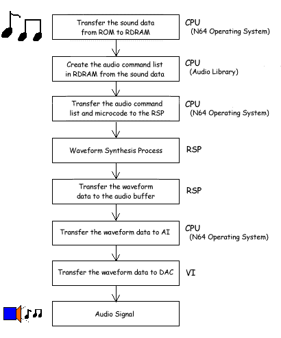

To provide for audio in your games, the software (game application, N64 operating system, audio library, and audio microcode) controls each piece of hardware (CPU, RDRAM, RSP, AI, and audio DAC). Waveform synthesis occurs through the cooperative efforts of the CPU and RSP. Ultimately, the AI (audio interface) reads the waveform data in the specified area of RDRAM known as the audio buffer as 16-bit stereo waveform data with a constant time interval. Then the AI sends it to the audio DAC, which outputs the audio signal.
The following illustration shows audio process:

Nintendo® Confidential
Copyright © 1999
Nintendo of America Inc. All Rights Reserved
Nintendo and N64 are registered trademarks of Nintendo
Last Updated March, 1999